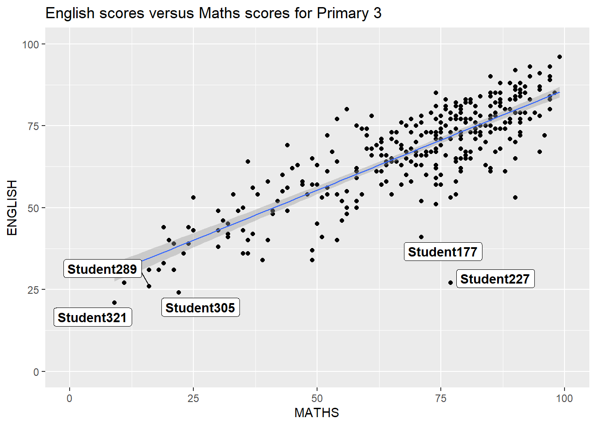
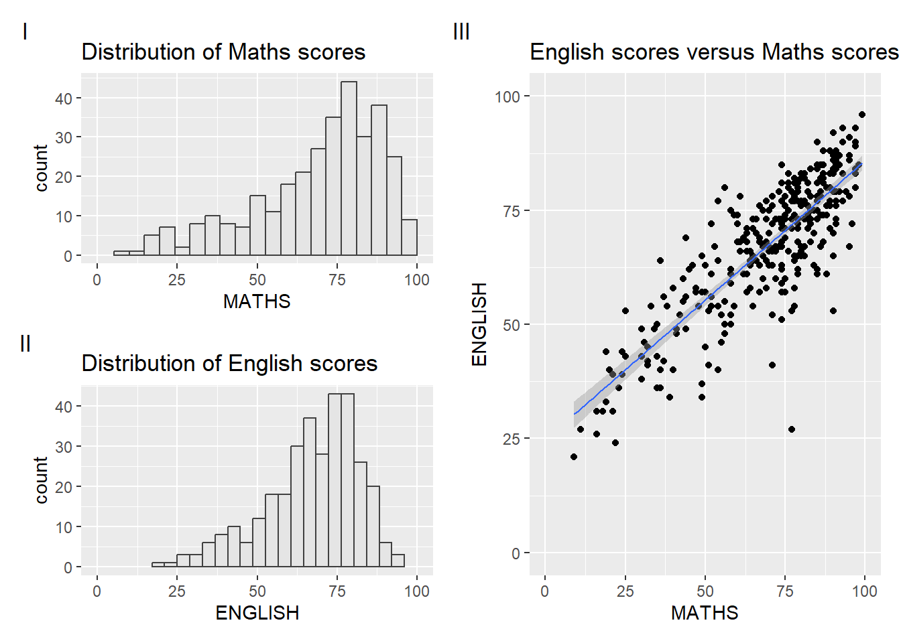

pacman::p_load(ggrepel, patchwork, ggthemes, hrbrthemes, tidyverse)Hands-on Exercise 2
Getting Started
Install and Load Libraries
In this exercise, the following libraries will be used :
tidyverse: R package that loads data science packages (usually used for data wrangling, analysis and visualization purposes)
ggrepel: R package that provide geom object to prevent overlapping text labels
patchwork: R package that allows combination of ggplot2 graphs to be plotted in single layout
hrbrthemes: R package that provide typography-centric themes and themes components in ggplot2
ggthemes: R package that provide more themes, geoms and scales for ggplot2
Import Data
exam_data <- read_csv("Exam_data.csv")ggrepel Package
It replaces geom_text with geom_text_repel and geom_label with geom_label_repel. In this example, a graph of primary 3 students’ maths and english scores were plotted using geom_label.
ggplot(data=exam_data, aes(x= MATHS, y=ENGLISH)) +
geom_point() +
geom_smooth(method=lm,
linewidth=0.5) +
geom_label(aes(label = ID),
hjust = .5, vjust = -.5) +
coord_cartesian(xlim=c(0,100),
ylim=c(0,100)) +
ggtitle("English scores versus Maths scores for Primary 3")
But as can be seen, the data points looks cluttered and overlap with each other. But when we replace the geom_label with geom_label_repel, this is how the graph looks like:
ggplot(data=exam_data,
aes(x= MATHS,
y=ENGLISH)) + geom_point() +
geom_smooth(method=lm, linewidth=0.5) + geom_label_repel(aes(label = ID),
fontface = "bold") + coord_cartesian(xlim=c(0,100), ylim=c(0,100)) + ggtitle("English scores versus Maths scores for Primary 3")
The graph looks better as there’s no more overlapping labels so that the graph becomes clearer.
ggtheme Package
When using ggplot2, we can customize how the graph looks like as ggplot2 offers in-built themes (e.g. theme_gray, theme_bw, theme_classic, theme_dark, theme_light, theme_linedraw, theme_minimal and theme_void). For more information about themes in ggtheme, click here. In this example, theme_gray is used, which looks like this:
ggplot(data=exam_data, aes(x = MATHS)) + geom_histogram(bins=20, boundary = 100, color="grey25", fill="grey90") + theme_gray() + ggtitle("Distribution of Maths scores") 
However, ggtheme package offers more than just basic themes. It also has professional-looking themes that are aesthetically more pleasing for presentation. In this example, the `theme_economist` is used:
ggplot(data=exam_data, aes(x = MATHS)) + geom_histogram(bins=20, boundary = 100, color="grey25", fill="grey90") + ggtitle("Distribution of Maths scores") + theme_economist()
hrbthems Package
hrbthems package provides a base theme that focus on typographic elements (incl. where labels are placed and fonts)
ggplot(data=exam_data,
aes(x = MATHS)) +
geom_histogram(bins=20,
boundary = 100,
color="grey25",
fill="grey90") +
ggtitle("Distribution of Maths scores") +
theme_ipsum(axis_title_size = 18,
base_size = 15,
grid = "Y")
The code above uses the following arguments:
axis_title_sizeis used to increase font sizebase_sizeis used to increase default axis labelgridis used to remove grid line
Plotting Beyond 1 Graph
How can we combine different graphs into one ? For example, we want to compare students’ math scores, english scores and combination of english and math scores. How can we plot them into one ?
p1 <- ggplot(data=exam_data, aes(x = MATHS)) +
geom_histogram(bins=20,
boundary = 100,
color="grey25",
fill="grey90") + coord_cartesian(xlim=c(0,100)) +
ggtitle("Distribution of Maths scores")
p1
p2 <- ggplot(data=exam_data, aes(x = ENGLISH)) +
geom_histogram(bins=20,
boundary = 100, color="grey25", fill="grey90") +
coord_cartesian(xlim=c(0,100)) +
ggtitle("Distribution of English scores")
p2
p3 <- ggplot(data=exam_data, aes(x= MATHS, y=ENGLISH)) +
geom_point() +
geom_smooth(method=lm,
size=0.5) +
coord_cartesian(xlim=c(0,100), ylim=c(0,100)) +
ggtitle("English scores versus Maths scores for Primary 3")
p3
We end up with 3 individual graphs. But with patchwork, we can combine separate graphs into 1. Few syntax used to combine graphs:
\(+\) sign is used to combine two-column layout.
\(()\) sign is used to create subplot group
\(/\) sign is used to build two-row layout.
\(|\) sign is used to place graphs beside each other.
The code below combines two graph into one row, side by side.
p1 + p2
While this code chunk plots p1 to be above p2, and p3 to be beside both plots.
(p1 / p2) | p3
It’s also possible to add annotation in patchwork using plot_annotation
((p1 / p2)|p3) + plot_annotation(tag_levels = 'I')
Adding Another Graph in a Graph
We can add another graph anywhere within a graph using inset-element() of patchwork package.
p3 + inset_element(p2,
left = 0.02,
bottom = 0.7,
right = 0.5,
top = 1)Using patchwork and ggtheme Together
It’s possible to combine your graphs while applying theme to it like below.
patchwork <- (p1 / p2) | p3
patchwork & theme_economist()